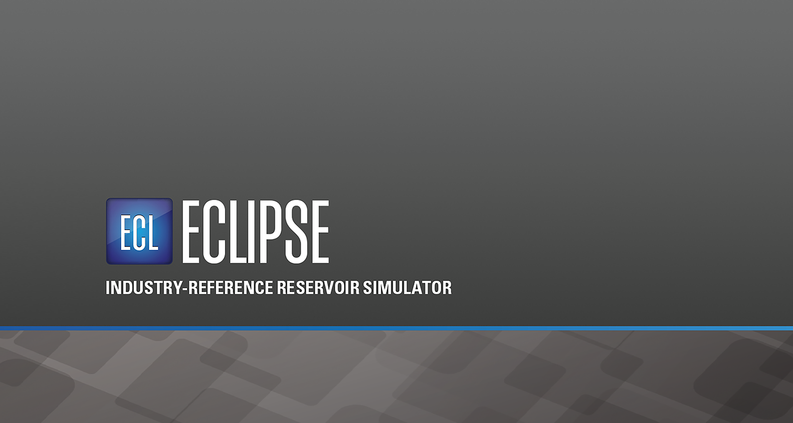

Copyright (c) 2022 Schlumberger. All rights reserved. Reproduction or alteration without prior written permission is prohibited, except as allowed under applicable law.
Use of this product is governed by the License Agreement. Schlumberger makes no warranties, express, implied, or statutory, with respect to the product described herein and disclaims without limitations any warranties of merchantability or fitness for a particular purpose.
"Schlumberger," the Schlumberger logotype, and other words or symbols used to identify the products and services described herein are either trademarks, trade names, or service marks of Schlumberger and its licensors, or are the property of their respective owners. These marks may not be copied, imitated, or used, in whole or in part, without the express prior written permission of their owners. In addition, covers, page headers, custom graphics, icons, and other design elements may be service marks, trademarks, and/or trade dress of Schlumberger and may not be copied, imitated, or used, in whole or in part, without the express prior written permission of Schlumberger.
The software described herein is configured to operate with at least the minimum specifications set out by Schlumberger. You are advised that such minimum specifications are merely recommendations and not intended to be limiting to configurations that may be used to operate the software. Similarly, you are advised that the software should be operated in a secure environment whether such software is operated across a network, on a single system and/or on a plurality of systems. It is up to you to configure and maintain your networks and/or system(s) in a secure manner. If you have further questions as to recommendations regarding recommended specifications or security, please feel free to contact your local Schlumberger representative.